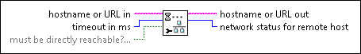
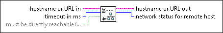

Wait for Configured Network VI
Owning Palette: Protocols VIs and Functions
Requires: Base Development System
Waits until the system can contact the remote host.

 Add to the block diagram Add to the block diagram |
 Find on the palette Find on the palette |
Owning Palette: Protocols VIs and Functions
Requires: Base Development System
Waits until the system can contact the remote host.

| Add to the block diagram |
Find on the palette |
 |
hostname or URL in specifies the remote host to contact. You can specify an IPv4 address, domain name, or URL that contains an IPv4 address or domain name. | ||||||
 |
timeout in ms specifies the time, in milliseconds, that this VI waits to get a response from the remote host. The actual time to wait may be 1-2 seconds more or less than timeout in ms. If timeout in ms is -1, this VI chooses a value appropriate for the networking environment. If timeout in ms is 0, this VI queries the status for the remote host but does not wait to get a response if the remote host is unreachable. The default is -1. Refer to the Details section for more information about how this VI waits. | ||||||
 |
must be directly reachable? specifies whether this VI waits until the remote host is directly accessible on a local network, without the use of a network gateway. For instance, if you connect an IPv4-accessible device directly to the computer over Ethernet or USB, set must be directly reachable? to TRUE to ensure that this VI waits until the device is online. The default is FALSE. This VI ignores the value of must be directly reachable? under the following circumstances:
|
||||||
 |
hostname or URL out returns the name or URL of the remote host. | ||||||
 |
network status for remote host returns the current status of the network to contact the remote host.
|
The Wait for Configured Network VI may use heuristics to identify whether or not the system is sufficiently configured to contact the remote host. If these heuristics fail, the VI may wait the duration of timeout in ms or return immediately. To avoid incorrectly waiting, do not specify an excessively large timeout in ms value.
Use the Wait for Configured Network VI before contacting a remote host when all of the following conditions apply:
The Wait for Configured Network VI achieves the same result that retrying a connection request in a For Loop achieves, in addition to the following advantages: